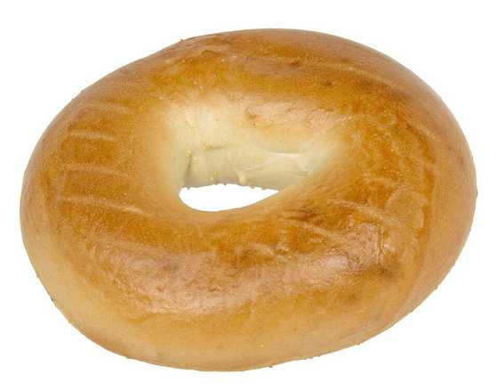
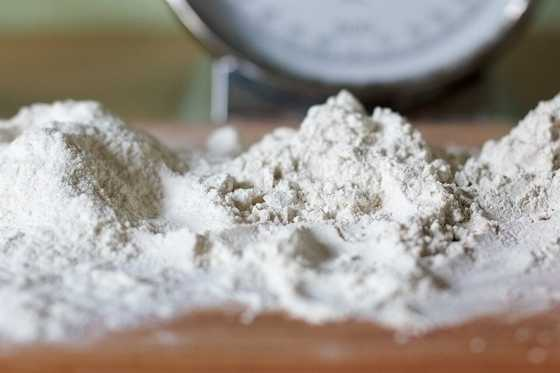
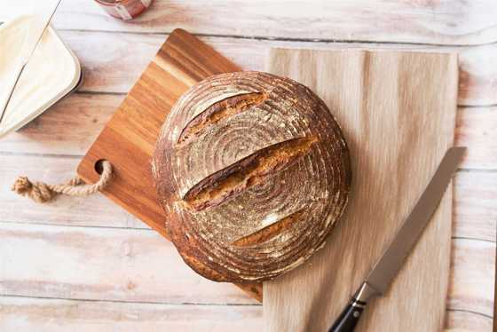

ベーグルとおやつ / 広島県呉市
ゆっくり寝かせた、もっちり。
焼けたぶんだけ、お届けします。
ベーグルとおやつのcoppe
低温でじっくり発酵させたベーグルと、シフォンケーキ。水曜と土曜のお昼から、売り切れるまで。

ABOUT
お店のこと
「ベーグルとおやつのcoppe」は、広島県呉市三条にあるお店です。お店のInstagramのプロフィールでは、低温長時間発酵のもっちりベーグルとシフォンケーキが人気として紹介されています。生地を休ませる時間をたっぷりとることが、あのもっちり感のもと。このページはそんな「ゆっくり」と「手づくりの小さな輪」を、ベーグルの焼き色に重ねて表現しました。
- 低温長時間発酵時間をかけて寝かせたベーグル。
- ベーグルとおやつベーグルのほか、シフォンケーキもあります。
- 水・土 12時〜完売次第クローズ。月に1回、通販も。
出典: お店のInstagram(@bagel_coppe)プロフィール・投稿。営業日は変わることがあるため、最新はInstagramでご確認ください。屋号「coppe」の意味や開業のいきさつは確認できておらず、ここでは触れていません。
写真はすべてフリー素材のイメージで、お店の実際の商品・店内ではありません。






VOICE
口コミ(イメージ例)
以下は制作側が作成したイメージ例で、実在のお客様の声ではありません。
イメージ例
噛むほどにもっちり。朝ごはんにちょうどいい大きさでした。
ご来店のお客様(イメージ)イメージ例
シフォンケーキがふわふわで、ベーグルと一緒に買って帰りました。
ご来店のお客様(イメージ)イメージ例
お昼すぎに行ったら残りわずか。次は開店に合わせて行きたいです。
ご来店のお客様(イメージ)ACCESS
アクセス・お店の情報
| 所在地 | 〒737-0821 広島県呉市三条2丁目15-19 |
|---|---|
| 営業日 | 水曜・土曜(Instagramプロフィールより。変更の場合あり) |
| 営業時間 | 12時オープン、完売次第クローズ(終了時刻は準備中) |
| 定休日 | 準備中 |
| 電話 | 準備中 |
| 価格 | 準備中 |
| @bagel_coppe |
写真クレジット
掲載写真はすべてフリー素材のイメージで、店舗の実際の様子ではありません。縮小・切り抜きの加工をしています。
- Bagel-Plain-Alt / Evan-Amos / パブリックドメイン(撮影地: 米国ニューヨーク)
- 20090424 Bagels 002 / Politikaner / CC BY-SA 3.0(撮影地: 撮影地不明)
- 20090424 Bagels 004 / Politikaner / CC BY-SA 3.0(撮影地: 撮影地不明)
- 20090424 Bagels 005 / Politikaner / CC BY-SA 3.0(撮影地: 撮影地不明)
- Flickr 55197885773 / chooyutshing / パブリックドメインマーク 1.0(撮影地: 撮影地不明)
- Baking Bread 001 / George M. Groutas / CC BY 2.0(撮影地: 北キプロス)
- Flours / Mudd1 / CC BY-SA 3.0(撮影地: 撮影地不明)
- Cardamom shortbread cookies, November 2008 / Timothy Vollmer / CC BY 2.0(撮影地: 撮影地不明)
- Tin Loaf - one slash in the crust / Mike Finn / CC BY 2.0(撮影地: 撮影地不明)
- Sourdough Loaf (217346645) / Dana Hutchinson / CC BY 3.0(撮影地: 米国ワシントン州)
- Ben Garratt 2016 (Unsplash) / Ben Garratt / CC0 1.0(撮影地: 撮影地不明)
- Cookie ingredients like flour and butter / markusspiske / CC0 1.0(撮影地: 撮影地不明)
- Home baked fruit scones, Trimingham, Norfolk / Kolforn / CC BY-SA 4.0(撮影地: イギリス・ノーフォーク)
ライセンスの詳細は creativecommons.org をご覧ください。